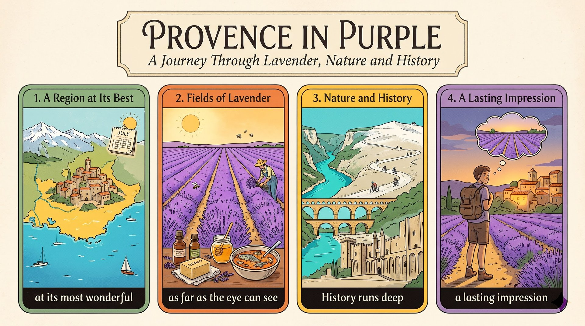

作者請你想像法國東南部的紫色花田，並介紹普羅旺斯的山和小鎮。
Imagine standing ...七月看花開、看農夫採收，再嚐嚐薰衣草冰淇淋和馬賽魚湯。
You can try regional treats愛自然就去峽谷和旺圖山；愛歷史就去亞爾、加爾橋和教皇宮。
If you're a cyclist ...普羅旺斯的暖意會留在你心中，回家後還是忘不了。
a lasting impression(You) + Imagine (V) + standing ... (O)。
with＋O＋V-ing 是獨立片語，表附帶狀況。
imagine＋V-ing，不接 to V；with 後受詞接 stretching（主動）。
Imagine standing in southeastern France,（祈使句）with fields of purple（with 片語）stretching as far as the eye can see.（現在分詞）語塊 1 ➔ 語塊 2 ➔ 語塊 3
這是祈使句，直接跟你說「想像你站在法國東南部」。
and there are fields ...。作者用 with 把畫面掛上去，更精簡。imagine＋V-ing；with＋O＋V-ing／p.p. 表附帶狀況。Imagine V-ing ...That (S) + 's (V) + Provence (C)；主幹二 you (S) + 'll find (V) + ... (O)。
widely regarded as 是省略 which is 的分詞片語；and 接第二句；waiting 修飾受詞。
be regarded as；find＋O＋V-ing（發現……正在）。
That's Provence,（主幹①）widely regarded as one of Europe's most beautiful areas,（分詞片語）and you'll find towering mountains and charming towns（主幹②）waiting for you.（現在分詞）語塊 1 ➔ 語塊 2 ➔ 語塊 3 ➔ 語塊 4
先指認「那就是普羅旺斯」，接著補充「公認是歐洲最美的地區之一」。
regarded：往左看是 Provence，是被公認，所以用 p.p.，等於 which is widely regarded as。and：往右看 you'll find 有主詞動詞，連接兩個句子。
widely regarded as＝公認是。You'll find ... waiting for you.you (S) + can watch (V) + the lavender bloom (O＋原形)。
If 條件句；watch＋O＋原形（感官動詞）。
If you come in July,（If 子句）you can watch the lavender bloom（主幹）on the Plateau of Valensole.（地點）語塊 1 ➔ 語塊 3 地點提前 ➔ 語塊 2
If 子句先翻，和中文同序。
If：七月還沒到，但子句用現在式 come，不寫 will come。watch：往右看 the lavender bloom，bloom 是原形，感官動詞接原形，看全過程。
bloom 開花；plateau 高原。If you come in ..., you can ...You (S) + might see (V) + farmers harvest ... (O)。
which 非限定關代，先行詞 the flowers。
be used to V（被用來）≠ be used to V-ing（習慣於）。
You might even see（主幹）farmers harvest the flowers,（受詞＋原形）which are used to make perfumes and cosmetics.（which 子句）語塊 1 ➔ 語塊 2 ➔ 語塊 3
前半照順序翻，「你甚至可能看到農夫採收花朵」。
which：左邊逗號＋名詞 the flowers，右邊 ___ are used 缺主詞。used to make：花是被拿來做，原形 make。如果是人「習慣」，才會用 be used to V-ing。
be used to V＝被用來；be used to V-ing＝習慣於。You might even see ...(You) + try (V) + regional treats (O)。
When 時間子句；such as 舉例。
lavender-flavored 連字號。
When you get hungry,（When 子句）try regional treats（祈使句）such as lavender-flavored ice cream.（舉例）語塊 1 ➔ 語塊 2 ➔ 語塊 3
When 先翻「肚子餓的時候」。
When：接完整句，表時間。try ... 看起來少了主詞，其實省略 you，是祈使句。不要加 to 也不要加 s。
regional 地區的；treat 點心；招待。When you ..., try ...you (S) + should order (V) + bouillabaisse (O)。
the area's most celebrated fish stew 是同位語。
outside of 接名詞；order 當「點餐」。
Outside of desserts,（介系詞片語）you should order bouillabaisse,（主幹）the area's most celebrated fish stew.（同位語）語塊 1 ➔ 語塊 2 ➔ 語塊 3
片語先翻「除了甜點之外」，然後給建議。
outside of＝besides；celebrated＝famous。You should order A, the ... B.You (S) + 'll love (V) + the turquoise waters (O)。
as 連接詞，後面倒裝 will＋S，助動詞跟前句；traveling with you 修飾 anyone。
as will S：前句用 will，就接 will；anyone 單數。
You'll love（主幹）the turquoise waters of the Verdon Gorge,（受詞）as will anyone traveling with you.（as 倒裝）語塊 1 ➔ 語塊 2 of 提前 ➔ 語塊 3
主句先翻「你一定會愛上」。
as will S：S 也會；助動詞看前句。You'll love ..., as will ...you (S) + can ride (V)。
If 條件；which 非限定關代，先行詞 Mont Ventoux 的 summit。
If you're a cyclist,（If 子句）you can ride to the summit of Mont Ventoux,（主幹）which rises dramatically against the sky.（which 子句）語塊 1 ➔ 語塊 2 ➔ 語塊 3
If 先翻，給條件。
If：條件先講。which：左邊逗號，右邊缺主詞；它指 the summit，單數，動詞加 s。
cyclist 自行車手；summit 山頂；dramatically 顯著地。If you're a ..., you can ...History (S) + runs (V)；主幹二 Roman ruins (S) + remain (V) + visible (C)。
and 連接兩個子句；前面是問句 Are you ...?
a history fan 名詞修飾名詞，不寫 histories；remain＋Adj.。
Are you a history fan?（問句）History runs deep here,（主幹①）and Roman ruins remain visible（主幹②）to this day.（時間）語塊 1 ➔ 語塊 2 ➔ 語塊 4 提前 ➔ 語塊 3
先問「你是歷史迷嗎？」，接著回答。
and：往右看 Roman ruins remain ...，有主詞動詞。remain：不接副詞，後面用形容詞 visible。
run deep；visible；to this day。Are you a ... fan?You (S) + can watch ... or admire ... (V)。
or 連接兩個原形動詞。
You can watch a show（動詞①）in the ancient amphitheater in Arles（地點）or admire the engineering of the Pont du Gard.（動詞②）語塊 2 地點提前 ➔ 語塊 1 ➔ 語塊 3
主詞「你可以」先講。
amphitheater 圓形劇場；engineering 工程。You can A or B.the Palace of the Popes (S) + will command (V) + your attention (O)。
once the seat of the papacy 是同位語；with 片語表手段。
command one's attention；once 當副詞「曾經」。
In Avignon, the Palace of the Popes,（主詞）once the seat of the papacy,（同位語）will command your attention（動詞片語）with its huge stone walls.（with 片語）語塊 1 ➔ 語塊 2 ➔ 語塊 4 手段提前 ➔ 語塊 3
主詞和同位語一起翻：「亞維儂的教皇宮曾是教廷所在地」。
once the seat of the papacy，拿掉也不影響主幹。Palace will command your attention。找動詞時，先跳過夾起來的部分。
command attention；once 曾經；the seat of 所在地。your attention。Provence (S) + has (V) + a gift (O)；主幹二 you (S) + 'll remember (V) + its warmth (O)。
so 表結果；after 時間子句。
long after（很久之後）。
Provence has a gift（主幹①）for leaving a lasting impression,（for 片語）so you'll remember its warmth（so 子句）long after you go home.（時間子句）語塊 1 ➔ 語塊 2 ➔ 語塊 4 時間提前 ➔ 語塊 3
前半照順序翻，「普羅旺斯總有本事留下難忘的印象」。
so：前面是原因，後面是結果。after：雖然是未來的事，時間子句一律用現在式 go，不寫 will go。
leave a lasting impression；warmth 不可數。..., so you'll remember ... long after ...1. 請選出最適合填入 (1) 的字：
imagine＋V-ing。2. 請選出最適合填入 (2) 的字：
in full bloom：盛開。3. 請選出最適合填入 (3) 的字：
Outside of＋N。Besides 不加 of。4. 請選出最適合填入 (4) 的字：
visible。5. 請選出最適合填入 (5) 的字：
as＋助動詞＋S：你朋友也會。前句 'll love → as will。6. If you climb to the ________, you can see the whole valley below.
summit。7. When you shop in the old town, look for ________ snacks you can't buy anywhere else.
regional。8. Smile when you meet people; it will leave a good ________ on them.
leave a good impression on sb。9. You'll enjoy the ________ of the sun on your skin after a long winter.
warmth。10. 下列哪一句文法正確？
11. 下列哪一句文法正確？
imagine＋V-ing；with＋O＋V-ing。12. 「你一定會愛上這道菜，你的家人也會。」最佳英譯是：
13. What can you do if you are a cyclist?
14. Which food does the author suggest you order?
15. What is the writer's main purpose?